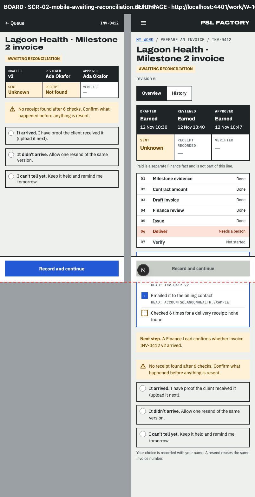
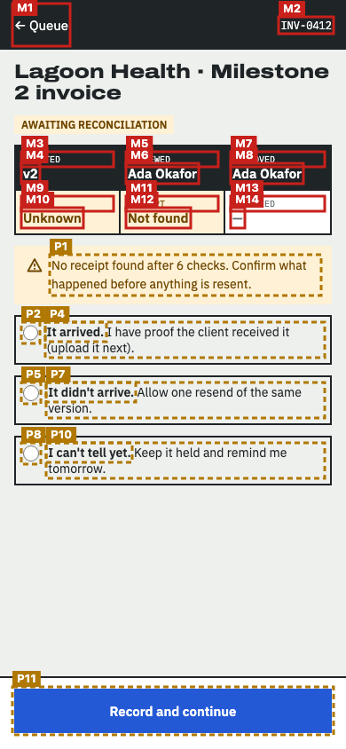
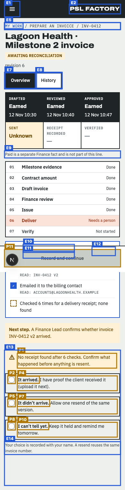
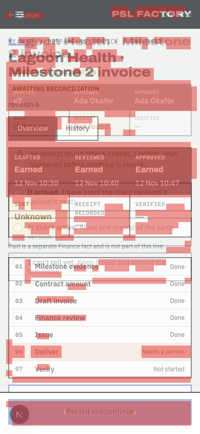

Does the built page follow the design?
Board SCR-02-mobile-awaiting-reconciliation.dc.html compared with http://localhost:4401/work/W-1603 at 390px wide · 2026-11-14T07:19:30.656Z
- Every board item is on the page or approved as an exception (100%).
- Visual match 59.1 is below 90.
- 11 item(s) are in a different place; review them (not part of the pass rule unless --strict-position).
13 of 27 things drawn on the board were found on the page: headings, buttons, links, search and filter controls, table columns, labels and the repeated rows (counted once, not per row).
How closely the shapes line up: blocks, bars, tables and text areas, compared in 12px squares over the top 844px. Different words in the same place still count as a match, so sample data does not lower the score.
Missing from the built page 14
Drawn on the board but not found on the page. Each one must be built, or approved as an exception.
| # | What | Text on the board | Where on the board | Exception |
|---|---|---|---|---|
| M1 | Link | ← Queue | left, 6px down | approved SCR-02 phone header belongs to F-03 / the frame's phone bar (D-08); F-09 adds only the entry button and the reconcile panel. |
| M2 | Text | INV-0412 | right, 21px down | approved SCR-02 page content owned by F-03 (work item header, facts strip, agent card, waiting panel); F-09 adds only the entry button and the reconcile panel (readiness PMO-0-6: differences raised against F-03). |
| M3 | Text | DRAFTED | left, 173px down | approved SCR-02 page content owned by F-03 (work item header, facts strip, agent card, waiting panel); F-09 adds only the entry button and the reconcile panel (readiness PMO-0-6: differences raised against F-03). |
| M4 | Text | v2 | left, 186px down | approved SCR-02 page content owned by F-03 (work item header, facts strip, agent card, waiting panel); F-09 adds only the entry button and the reconcile panel (readiness PMO-0-6: differences raised against F-03). |
| M5 | Text | REVIEWED | middle, 173px down | approved SCR-02 page content owned by F-03 (work item header, facts strip, agent card, waiting panel); F-09 adds only the entry button and the reconcile panel (readiness PMO-0-6: differences raised against F-03). |
| M6 | Text | Ada Okafor | middle, 186px down | approved SCR-02 page content owned by F-03 (work item header, facts strip, agent card, waiting panel); F-09 adds only the entry button and the reconcile panel (readiness PMO-0-6: differences raised against F-03). |
| M7 | Text | APPROVED | right, 173px down | approved SCR-02 page content owned by F-03 (work item header, facts strip, agent card, waiting panel); F-09 adds only the entry button and the reconcile panel (readiness PMO-0-6: differences raised against F-03). |
| M8 | Text | Ada Okafor | right, 186px down | approved SCR-02 page content owned by F-03 (work item header, facts strip, agent card, waiting panel); F-09 adds only the entry button and the reconcile panel (readiness PMO-0-6: differences raised against F-03). |
| M9 | Text | SENT | left, 223px down | approved SCR-02 page content owned by F-03 (work item header, facts strip, agent card, waiting panel); F-09 adds only the entry button and the reconcile panel (readiness PMO-0-6: differences raised against F-03). |
| M10 | Text | Unknown | left, 236px down | approved SCR-02 page content owned by F-03 (work item header, facts strip, agent card, waiting panel); F-09 adds only the entry button and the reconcile panel (readiness PMO-0-6: differences raised against F-03). |
| M11 | Text | RECEIPT | middle, 223px down | approved SCR-02 page content owned by F-03 (work item header, facts strip, agent card, waiting panel); F-09 adds only the entry button and the reconcile panel (readiness PMO-0-6: differences raised against F-03). |
| M12 | Text | Not found | middle, 236px down | approved SCR-02 page content owned by F-03 (work item header, facts strip, agent card, waiting panel); F-09 adds only the entry button and the reconcile panel (readiness PMO-0-6: differences raised against F-03). |
| M13 | Text | VERIFIED | right, 223px down | approved SCR-02 page content owned by F-03 (work item header, facts strip, agent card, waiting panel); F-09 adds only the entry button and the reconcile panel (readiness PMO-0-6: differences raised against F-03). |
| M14 | Text | — | right, 236px down | approved SCR-02 page content owned by F-03 (work item header, facts strip, agent card, waiting panel); F-09 adds only the entry button and the reconcile panel (readiness PMO-0-6: differences raised against F-03). |
In a different place 11
Found on both, but in a different order, side of the page, or area (for example inside the table frame instead of above it).
| # | What | How it moved |
|---|---|---|
| P1 | Text No receipt found after 6 checks. Confirm what happened before anything is resent. |
|
| P2 | Pagination It arrived. I have proof the client received it (upload it next). |
|
| P3 | Text It arrived. |
|
| P4 | Pagination It arrived. I have proof the client received it (upload it next). |
|
| P5 | Option It didn't arrive. Allow one resend of the same version. |
|
| P6 | Text It didn't arrive. Allow one resend of the same version. |
|
| P7 | Text It didn't arrive. |
|
| P8 | Option I can't tell yet. Keep it held and remind me tomorrow. |
|
| P9 | Text I can't tell yet. Keep it held and remind me tomorrow. |
|
| P10 | Text I can't tell yet. |
|
| P11 | Link Record and continue |
|
Looks different 2
Found on both, but styled differently: table rows and cells, fonts, colours, underlines, outlines, corners. Not part of the score; check each one against the board.
| What | Difference |
|---|---|
| Heading "Lagoon Health · Milestone 2 invoice" |
|
| Link "Record and continue" |
|
On the page but not on the board 14
Built but not drawn. Some are expected (data, status lines); the rest need the design engineer to approve or remove them.
| # | What | Text on the page | Where on the page |
|---|---|---|---|
| E1 | Button | Menu | left, 6px down |
| E2 | Text | PSL FACTORY | right, 15px down |
| E3 | Navigation area | Breadcrumb | middle, 72px down |
| E4 | Text | MY WORK / PREPARE AN INVOICE / INV-0412 | middle, 72px down |
| E5 | Link | MY WORK | left, 73px down |
| E6 | Navigation area | Work item | left, 226px down |
| E7 | Link | Overview | left, 228px down |
| E8 | Link | History | middle, 228px down |
| E9 | Text | Paid is a separate Finance fact and is not part of this line. | middle, 470px down |
| E10 | Text | Chidi | middle, 760px down |
| E11 | Text | Cannot approve, send or pay. | middle, 781px down |
| E12 | Text | WAITING | right, 768px down |
| E13 | Side panel | Confirm what happened | middle, 1088px down |
| E14 | Text | Your choice is recorded with your name. A resend reuses the same invoice number. | middle, 1372px down |
Pictures
The red dashed line on the side-by-side marks how far down the visual score looks. On the marked board, red boxes are missing items (M). On the marked page, amber boxes moved (P) and blue boxes are extra (E). In the difference picture both screens are laid over each other and red squares are where the shapes do not line up.






Notes about this run
- Images: /_blob/ images are served from /Users/Hunchoo/psl-factory-worktrees/f-09/design/mascots/canvas-assets.json (19 mapped).
Found on both (13)
| Heading | Lagoon Health · Milestone 2 invoice | |
| Text | AWAITING RECONCILIATION | |
| Text | No receipt found after 6 checks. Confirm what happened before anything is resent. | |
| Pagination | It arrived. I have proof the client received it (upload it next). | |
| Pagination | It arrived. I have proof the client received it (upload it next). | |
| Text | It arrived. | |
| Option | It didn't arrive. Allow one resend of the same version. | page: It didn’t arrive. Allow one resend of the same version. |
| Text | It didn't arrive. Allow one resend of the same version. | page: It didn’t arrive. Allow one resend of the same version. |
| Text | It didn't arrive. | page: It didn’t arrive. |
| Option | I can't tell yet. Keep it held and remind me tomorrow. | page: I can’t tell yet. Keep it held and remind me tomorrow. |
| Text | I can't tell yet. Keep it held and remind me tomorrow. | page: I can’t tell yet. Keep it held and remind me tomorrow. |
| Text | I can't tell yet. | page: I can’t tell yet. |
| Link | Record and continue |
How the scores are worked out
Element coverage. The board is drawn locally from its own template and sample data. From the drawn board the check lists everything a person sees or uses: page areas (navigation, main, search), headings, links, buttons, form fields with their labels, table column headers, filter, search and pagination controls and fixed labels. Rows drawn from sample data count once, as a pattern ("table rows with these columns"). Each item is looked for on the page by its kind and its words (ignoring capitals, curly quotes and small wording differences, at least 80% similar). Coverage is found ÷ drawn. Order is compared in reading order (top to bottom, left to right); an item is "moved" when it breaks the order, sits on the other side of the page, or sits inside a different area.
Visual match. Both full-page screenshots are compared in 12px squares after a light blur, over the board's height (844px; the page is 1520px). Only squares with something in them count. A square matches when its colours line up, or when both have text or lines there. Score = matching ÷ counted squares (1374 of 2324). Over every square including empty background it would be 59.5.
Technical details
Board file: /Users/Hunchoo/psl-factory-worktrees/f-09/design/canvas/project/SCR-02-mobile-awaiting-reconciliation.dc.html
Viewport: 390×844
Report data: report.json
Exceptions file: /Users/Hunchoo/psl-factory/delivery/features/F-09/round-1/fidelity/exception-requests.json